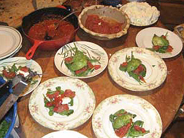

I had the pleasure of spending a crisp, Spring day in Portsmouth, NH cooking and chatting with Daniel Lorca of the band Nada Surf as he prepared a gourmet, sit-down dinner for 28 pals.
When I first invited Nada Surf to be on the show, I was told that Daniel Lorca was the guy I wanted to talk to. Then Daniel emailed his response: "i'm way into it, but i don't want to talk about it, i wanna do it." After years of only having access to touring bands between their sound check and set, I've been doing a lot of talking about cooking with rockstars. To actually cook with a band was a dream come true.

Daniel prepared a salad of arugula, smoked tomatoes, tomato jam, and grilled avocado (it's as good as it sounds!). I jokingly called it "6-hour Salad" because that's how long he worked on it. The fresh tomatoes were slowly smoked over woodchips in the grill, and when they were softened, Daniel separated out the seeds which he reduced into a smoky jam. The tomatoes were cut into strips to put on the salads. As the day meandered, the avocados finally went on the grill after dark. I was on flashlight duty while Daniel checked for the perfect grill marks.
I wrote up a streamlined adaptation of his recipe that requires much less time and serves 6 people instead of fivetimes that amount.
In addition to the smoky grilled salad, Daniel served tarragon cornish hens with a cognac cream sauce loaded with chanterelles and grapes, and wild rice with grilled ramps (wild garlicky leeks). Dinner was served close to midnight, but it was a party so nobody cared.
We left that night (technically, early the next morning) with full bellies, new cooking tips, and nearly 5 hours of footage. I'm considering renaming the show "Cooking with Nada Surf".
Back to News